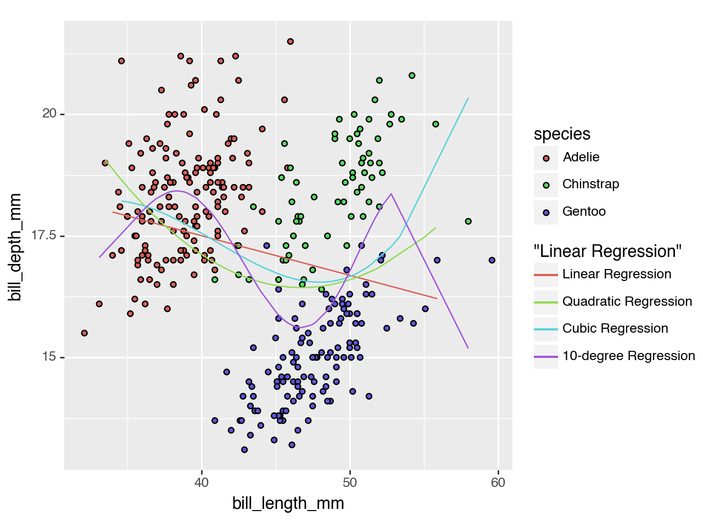

# Code Here
from palmerpenguins import load_penguins
import numpy as np
import pandas as pd
from sklearn.pipeline import Pipeline
from sklearn.linear_model import LinearRegression
from sklearn.metrics import r2_score
from sklearn.preprocessing import OneHotEncoder, PolynomialFeatures
from sklearn.model_selection import train_test_split
from sklearn.compose import ColumnTransformerPalmer Penguins Modeling
Import the Palmer Penguins dataset and print out the first few rows.
Suppose we want to predict bill_depth_mm using the other variables in the dataset.
Which variables would we need to dummify?
penguins = load_penguins()
penguins = penguins.dropna()You would need to dummify species, island, and sex.
Let’s use bill_length_mm to predict bill_depth_mm. Prepare your data and fit the following models on the entire dataset:
- Simple linear regression (e.g. straight-line) model
- Quadratic (degree 2 polynomial) model
- Cubic (degree 3 polynomial) model
- Degree 10 polynomial model
Make predictions for each model and plot your fitted models on the scatterplot.
# Code Here
X = penguins.drop("bill_length_mm", axis = 1)
y = penguins["bill_length_mm"]
X_train, X_test, y_train, y_test = train_test_split(X, y)lr = LinearRegression()
enc = OneHotEncoder()
ct = ColumnTransformer(
[("dummify_s", enc, ["species"]),
("dummify_i", enc, ["island"]),
("dummify_x", enc, ["sex"])]
)
my_pipeline = Pipeline(
[("dummify_everything", ct), ("ols", lr)]
)fitted_pipeline = my_pipeline.fit(X_train, y_train)
y_pred = fitted_pipeline.predict(X_test)# Simple Linear Regression
X = penguins[["bill_length_mm"]]
y = penguins["bill_depth_mm"]
X_train, X_test, y_train, y_test = train_test_split(X, y)
lr = LinearRegression()
my_pipeline = Pipeline(
[("ols", lr)]
)
fitted_pipeline = my_pipeline.fit(X_train, y_train)
y_pred = fitted_pipeline.predict(X_test)
X_testlm = X_test
X_testlm["pred"] = y_pred# Quadratic Regression
X_train, X_test, y_train, y_test = train_test_split(X, y)
lr = LinearRegression()
ct = ColumnTransformer(
[("Square", PolynomialFeatures(degree = (1, 2)), ["bill_length_mm"])]
)
my_pipeline = Pipeline(
[("Square", ct), ("ols", lr)]
)fitted_pipeline = my_pipeline.fit(X_train, y_train)
y_pred = fitted_pipeline.predict(X_test)
X_testqr = X_test
X_testqr["pred"] = y_pred# Cubic Regression
X_train, X_test, y_train, y_test = train_test_split(X, y)
lr = LinearRegression()
ct = ColumnTransformer(
[("Cube", PolynomialFeatures(degree = (1, 3)), ["bill_length_mm"])]
)
my_pipeline = Pipeline(
[("Cube", ct), ("ols", lr)]
)
fitted_pipeline = my_pipeline.fit(X_train, y_train)
y_pred = fitted_pipeline.predict(X_test)
X_testcr = X_test
X_testcr["pred"] = y_pred# Degree 10 Polynomial Model
X_train, X_test, y_train, y_test = train_test_split(X, y)
lr = LinearRegression()
ct = ColumnTransformer(
[("10", PolynomialFeatures(degree = (1, 10)), ["bill_length_mm"])]
)
my_pipeline = Pipeline(
[("10", ct), ("ols", lr)]
)
fitted_pipeline = my_pipeline.fit(X_train, y_train)
y_pred = fitted_pipeline.predict(X_test)
X_test10r = X_test
X_test10r["pred"] = y_pred# Code Here
from plotnine import *
(ggplot(penguins, aes(x = "bill_length_mm", y = "bill_depth_mm", fill = "species")) +
geom_point() +
geom_line(X_testlm, aes(x = "bill_length_mm", y = "pred", color = '"Linear Regression"'), inherit_aes = False) +
geom_line(X_testqr, aes(x = "bill_length_mm", y = "pred", color = '"Quadratic Regression"'), inherit_aes = False) +
geom_line(X_testcr, aes(x = "bill_length_mm", y = "pred", color = '"Cubic Regression"'), inherit_aes = False) +
geom_line(X_test10r, aes(x = "bill_length_mm", y = "pred", color = '"10-degree Regression"'), inherit_aes = False)
)
<Figure Size: (640 x 480)>- Are any of the models above underfitting the data? If so, which ones and how can you tell?
- Are any of thhe models above overfitting the data? If so, which ones and how can you tell?
- Which of the above models do you think fits the data best and why?
Linear is underfitting, not capturing values well. Cubic and 10 Degree are overfitting